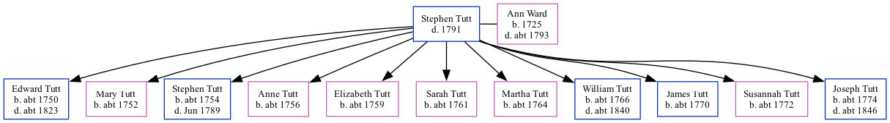

Stephen Tutt - 1791
[ Home ] | [ Calendar ] | [ Surnames Index ] | [ Family History ]Stephen Tutt was the 5 times great-grandfather of Nigel Horne and married Ann Ward (with whom he had 11 children: Edward, Mary, Stephen, Anne, Elizabeth, Sarah, Martha, William, James, Susannah and Joseph) in Smeeth, Kent, England on Aug 27, 17504.
He died in 1791 in Aldington, Kent, England1,2,3 and was buried there on Jun 11, 1791 (KFHS CD17)1.
Children
- Edward was born c. 1750
- Mary was born c. 1752
- Stephen was born c. 1754
- Anne was born c. 1756
- Elizabeth was born c. 1759
- Sarah was born c. 1761
- Martha was born c. 1764
- William was born c. 1766
- James was born c. 1770
- Susannah was born c. 1772
- Joseph was born c. 1774
Citations
- England, Select Deaths and Burials, 1538-1991 Ancestry.com Operations, Inc.
- OneWorldTree Online publication - Provo, UT, USA: The Generations Network, Inc.
- Public Member Trees Online publication - Provo, UT, USA: The Generations Network, Inc., 2006.Original data - Family trees submitted by Ancestry members.Original data: Family trees submitted by Ancestry members.
- England Marriages 1538-1973 - Findmypast
Media
England Marriages 1538-1973 - R_847912256
Family Tree
Generated by ged2site. Last updated on Nov 13, 2024